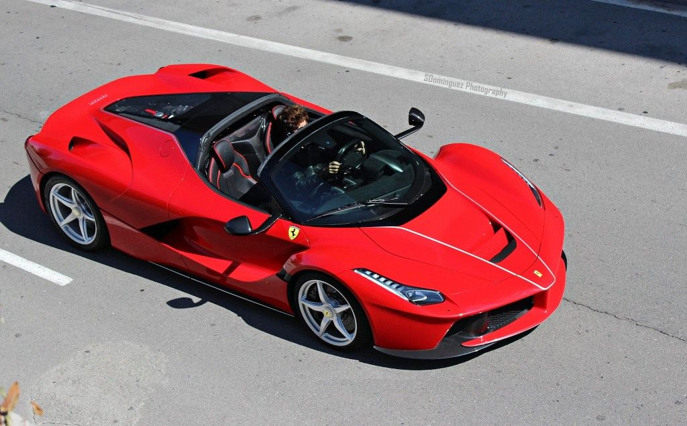
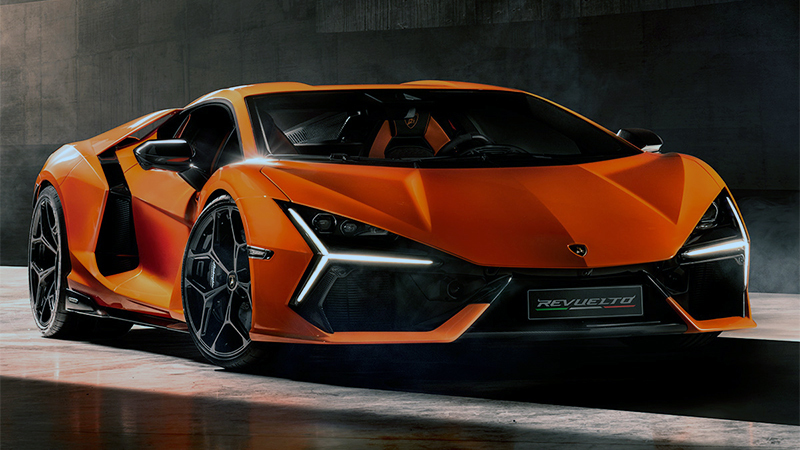
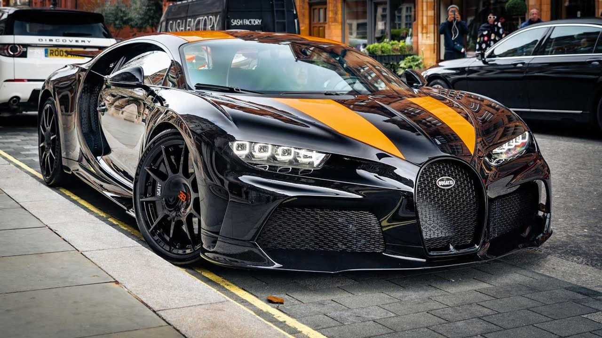

Los supercoches surgieron en los años 70 como respuesta a la necesidad de romper récords de velocidad.
McLaren p1: Reino Unido, desarrollado por McLaren Automotive y lanzado en 2013. Motivación: McLaren quería crear un hipercoches híbrido que combinara rendimiento extremo en pista con conducción en carretera. Características clave: Motor V8 biturbo + motor eléctrico, alrededor de 903 CV, aerodinámica activa y enfoque en la ligereza.

Ferrari LaFerrari: Italia, desarrollado por Ferrari y presentado en 2013. Motivación: Ferrari quería demostrar su liderazgo en innovación híbrida sin comprometer el ADN de sus V12. Características clave: V12 + motor eléctrico, total de 950 CV, enfoque en aerodinámica activa, alta velocidad máxima y aceleración extrema.

Lamborghini Revuelto: Italia, desarrollado por Lamborghini y lanzado en 2023. Motivación: Este modelo reemplaza al Aventador y busca combinar el icónico estilo agresivo de Lamborghini con tecnología híbrida ligera para cumplir regulaciones modernas sin perder rendimiento. Características clave: Motor V12 híbrido, tracción total, diseño futurista con puertas en “Y”, 1000 CV aproximados, enfocado en emoción y espectáculo visual.

Bugatti Chiron: Francia, desarrollado por Bugatti y lanzado en 2016 como sucesor del Veyron. Motivación: Bugatti buscaba romper barreras de velocidad y lujo. Características clave: Motor W16 quad-turbo, 1500 CV, 420 km/h de velocidad máxima limitada electrónicamente, enfoque en exclusividad, ingeniería de precisión y confort extremo.

Evolución
Con el paso del tiempo, incorporaron materiales avanzados y tecnología de competición.
Actualidad
Hoy combinan electrificación, aerodinámica avanzada e inteligencia artificial.
Competición
Muchos supercoches nacen de tecnologías desarrolladas en la Fórmula 1 y otras competiciones.
Futuro
El futuro apunta hacia coches eléctricos de alto rendimiento con aceleraciones aún más rápidas.